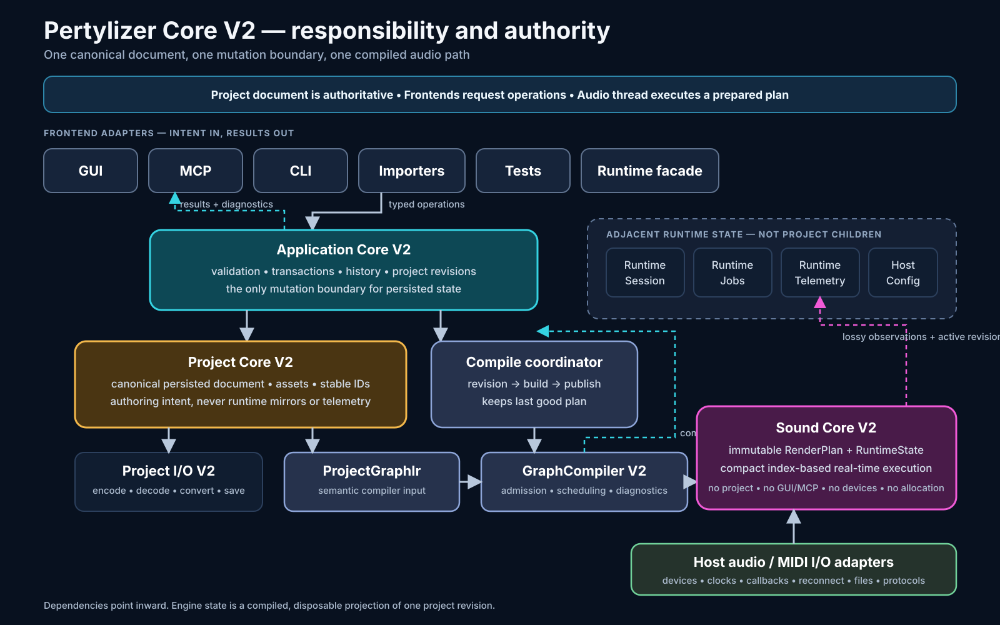
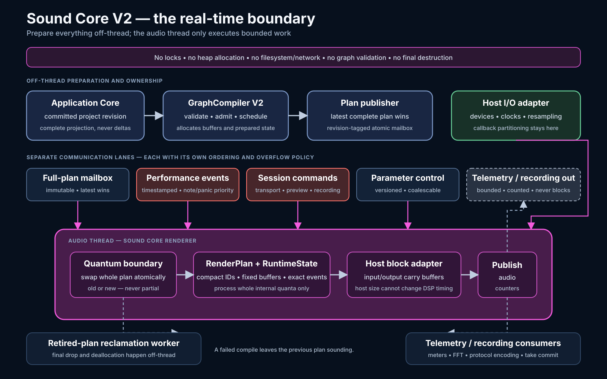
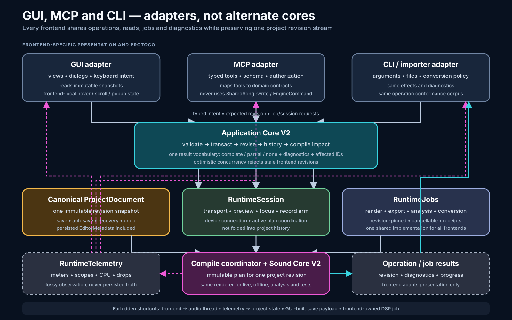

1. Core responsibility and authority
Shows the only permitted path from frontend intent to canonical revision, compilation and audio execution.

Architecture diagrams derived from plans/v2/master-plan.md, focused on authority, the real-time audio boundary, and the shared GUI/MCP/CLI contracts.
Shows the only permitted path from frontend intent to canonical revision, compilation and audio execution.

Shows off-thread preparation, the separate communication lanes, quantum-boundary plan swapping and off-thread reclamation.

Shows how frontends share Application Core operations, runtime jobs and telemetry without direct engine mutation.
